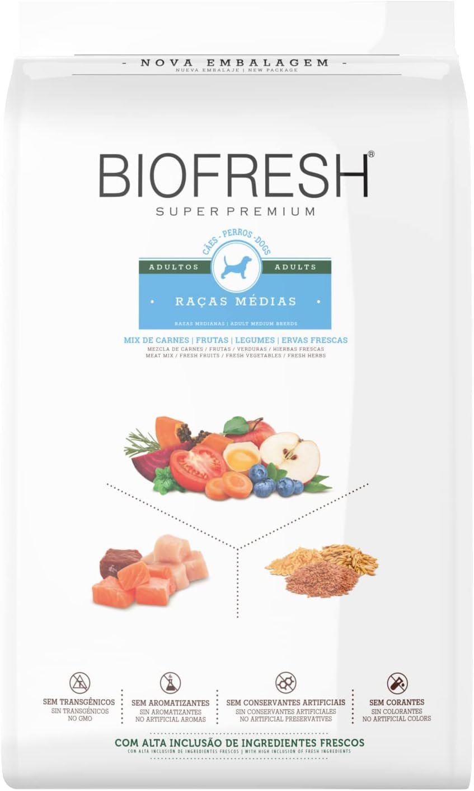
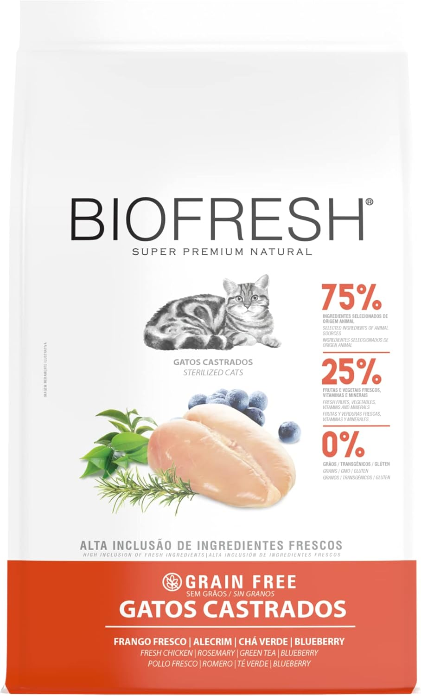
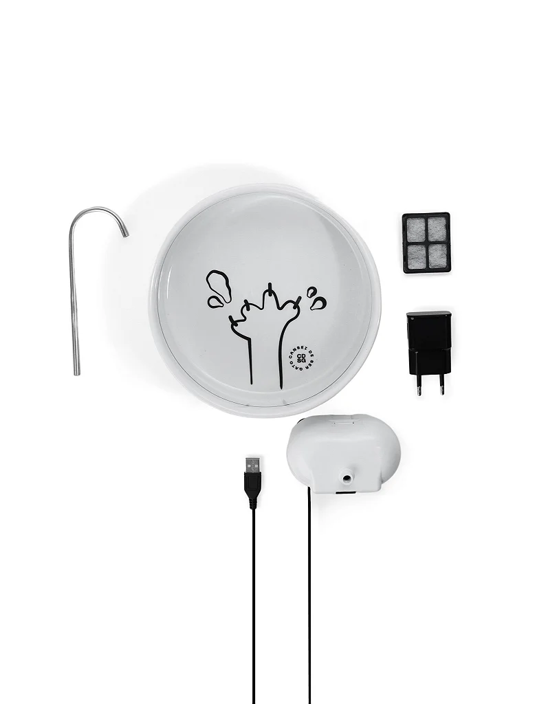
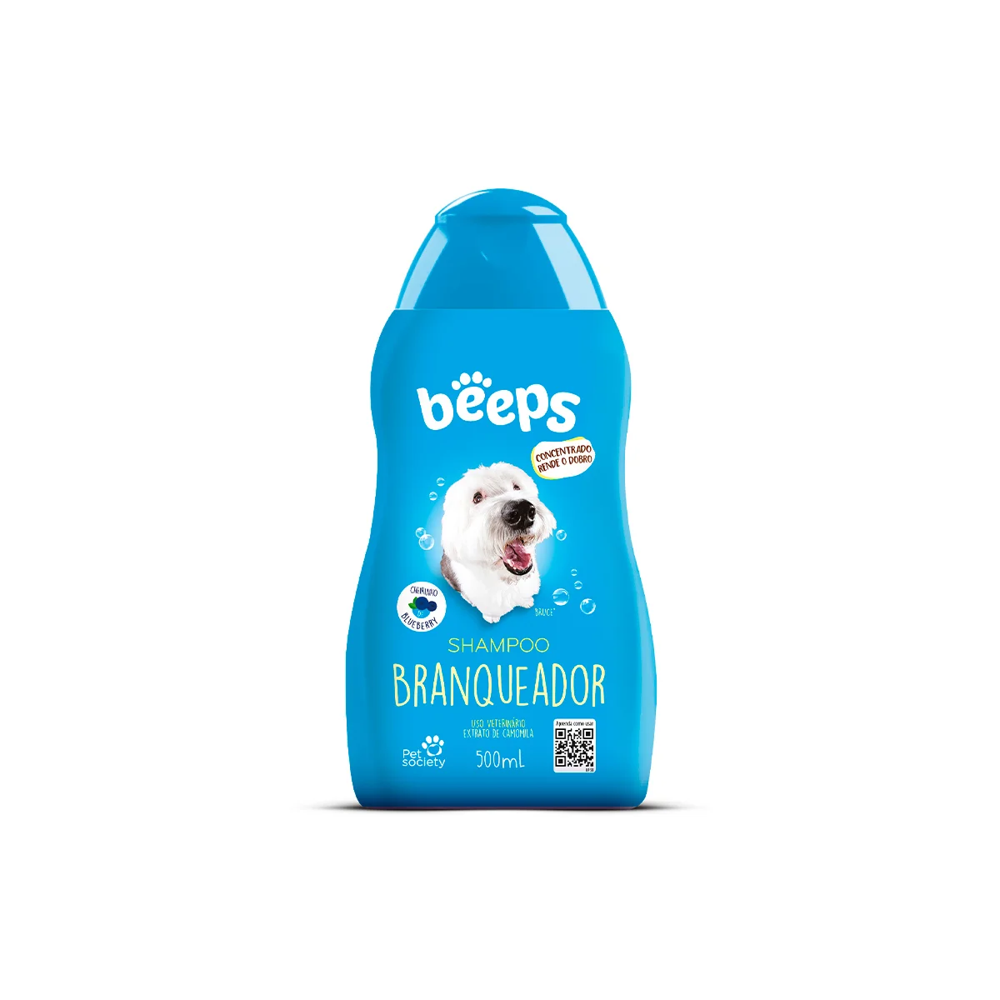
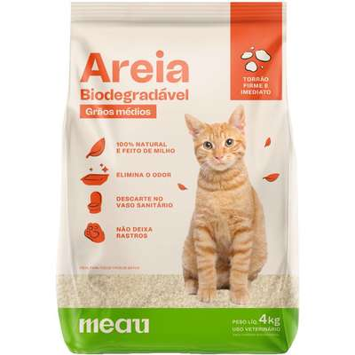

Produtos
Rações

Ração Biofresh Super Premium - Adulto Mini/Pequeno
Alimentação completa e balanceada, livre de transgênicos, aromatizantes e corantes artificiais, mantém os pelos mais brilhante e a pele mais saudável. 100% natural
R$ 320,00

Ração Ração Biofresh Gatos Castrado Salmão
- Favorece a saúde oral, ajudando na prevenção de doenças nos dentes e gengiva. Nutrientes que proporcionam a formação de fezes mais firmes e com menos odor; - Auxilia na manutenção e beleza dos pelos, promovendo mais brilho e fios sedosos; - Contribui para o trato urinário saudável através da alta concentração de minerais.
R$ 90,00
Acessórios

Bebedouro fonte Yo
Feita em polipropileno atóxico de alta qualidade, é resistente, leve e fácil de limpar. Super silenciosa e fácil de limpar.
R$ 280,00

Arranhador
Arranhador para gatos em madeira e sisal - 45cm
R$ 150,00
Higiene e Limpeza

Shampoo branqueador Beeps
Limpeza e condicionamento da pelagem de pets, branqueamento e realçamento da pelagem branca, deixá-los ainda mais brilhantes.
R$ 35,00

Areia sanitária para gatos
Areia sanitária para gatos
R$ 40,00
Serviços
- Banho e tosa - R$ 70,00 (com tele-busca)
- Consulta veterinária - R$ 150,00 (sem tele-busca)